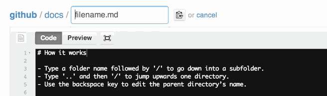
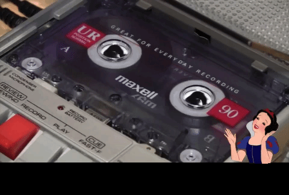
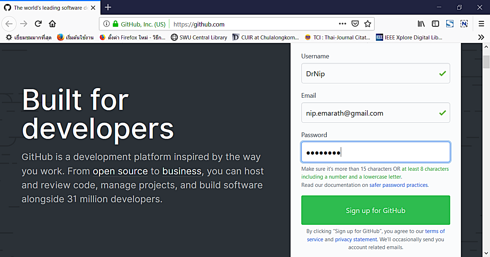
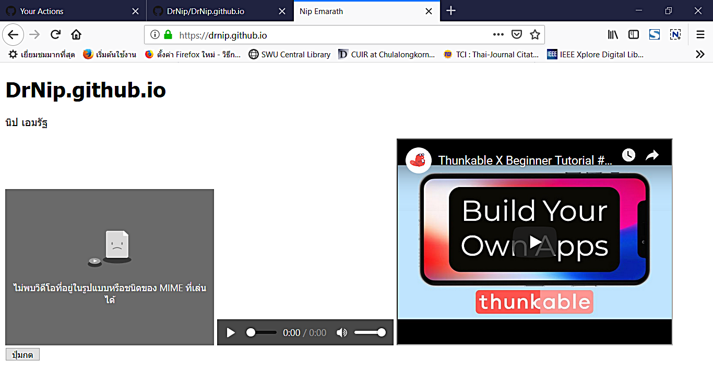
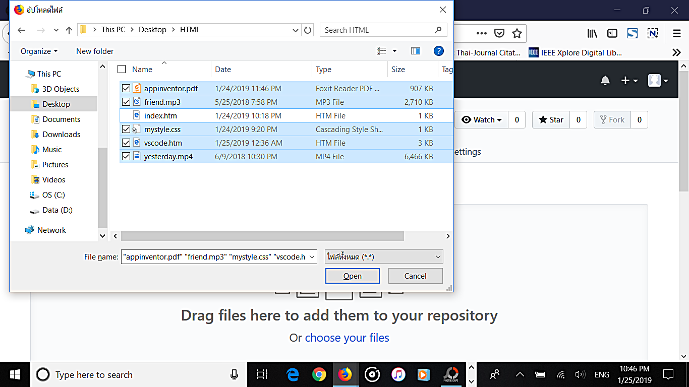
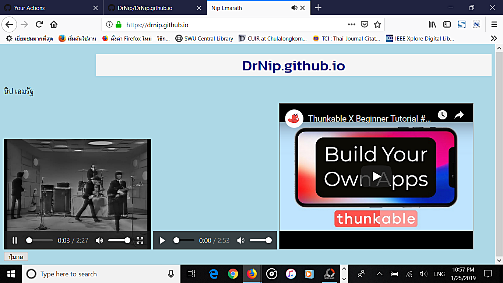
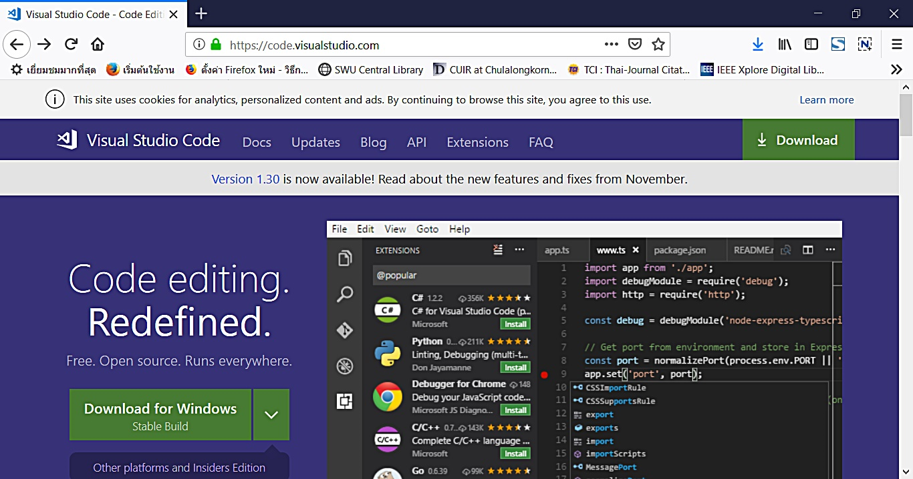
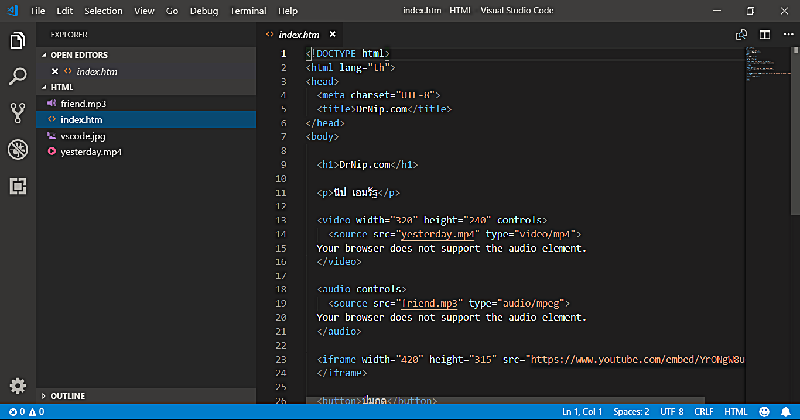

การลบไฟล์เอกสารออกจาก GitHub
โดย นิป เอมรัฐ
คลิกชื่อไฟล์
คลิกปุ่มรูปถังขยะ Delete this file
คลิกปุ่ม Commit changes
GitHub Help. (2019, Jan 28). Deleting files. Restrieve from https://help.github.com/articles/deleting-files/
การสร้างแฟ้มเอกสารบน GitHub
โดย นิป เอมรัฐ
ทำได้โดยการสร้างไฟล์ใหม่ โดยเริ่มจากการพิมพ์ชื่อแฟ้ม/ชื่อไฟล์

คลิกปุ่ม Create new file
พิมพ์ชื่อแฟ้ม/ชื่อไฟล์ เช่น images/pic.html แล้วคลิกปุ่ม Commit new file
จะได้แฟ้มเอกสารตามต้องการ ส่วนไฟล์ที่สร้าง ก็ลบออกได้
เมื่อได้แฟ้มเอกสารแล้ว ก็สามารถอัพโหลดไฟล์ต่างๆ ขึ้นไปเก็บในแฟ้มได้ ดังขั้นตอนต่อไปนี้
คลิกปุ่ม Upload files
คลิก Choose your files
เลือกไฟล์ที่ต้องการอัพโหลด คลิกปุ่ม Open
คลิกปุ่ม Commit changes
Stack Overflow. (2014, Apr 11). Creating folders inside github.com repo without using Github. Restrieve from https://stackoverflow.com/questions/18773598/creating-folders-inside-github-com-repo-without-using-git
Animated Gif
โดย นิป เอมรัฐ
สร้างภาพเคลื่อนไหวจากวีดิโอที่ Giphy

วิธีอ้างอิงจากเว็บไซต์ในรูปแบบ APA
โดย นิป เอมรัฐ
โครงสร้าง: Last, F. M. (Year, Month Date Published). Article title. Retrieved from URL
ตัวอย่าง: Satalkar, B. (2010, July 15). Water aerobics. Retrieved from http://www.buzzle.com
จาก http://www.easybib.com/reference/guide/apa/website
การสร้างแอปพลิเคชันด้วย Thunkable
โดย นิป เอมรัฐ
เอกสาร PDF เกี่ยวกับ App Inventor ซึ่งเป็นต้นแบบของ Thunkable แนะนำให้อ่านประกอบ
ดาวน์โหลด Click
ฝังไฟล์เอกสาร PDF ลงในหน้าเว็บด้วยรหัสต่อไปนี้
<object width="400" height="400" data="appinventor.pdf"></object>
การขอพื้นที่เก็บเว็บเพจฟรี
โดย นิป เอมรัฐ
สมัครสมาชิก Github
ไปที่ github.com
Signup
เลือก Username*
ใส่อีเมล์
รหัสผ่านอย่างน้อย 8 ตัว ประกอบด้วยตัวอักษรภาษาอังกฤษตัวเล็กและตัวเลข
*Username ที่เลือกมีความสำคัญมาก เพราะมันจะปรากฏอยู่ในที่อยู่ (URL) ของเว็บไซต์ของคุณด้วย
Verify account
ทำแบบทดสอบ เพื่อทดสอบว่าเราเป็นคนจริงๆ
เลือกแผน Free > Continue
ขั้นสุดท้ายเป็นแบบสอบถาม สามารถข้าม (skip this step) ไปได้
เปิดอีเมล เพื่อยืนยันที่อยู่อีเมล คลิกปุ่ม Verify email address
ที่หน้าเริ่มต้น คลิก Start a project
ตั้งชื่อในช่อง Repository name ดังนี้ "ชื่อผู้ใช้ของคุณ.github.io"
คลิกปุ่ม Create repository
คลิกที่ README
เปลี่ยนชื่อไฟล์จาก README.md เป็น index.html
ลบข้อมูลเดิมออก แล้วแทนที่ด้วยข้อมูลจากไฟล์ index.html ของคุณ ด้วยคำสั่ง Copy > Paste
คลิกปุ่ม Commit new file เพื่อบันทึกการทำงาน
ดูผล โดยพิมพ์ที่อยู่เว็บของคุณในเว็บเบราว์เซอร์
"ชื่อผู้ใช้ของคุณ.github.io"
หากไม่เห็นหน้าเว็บ ให้รอสักครู่ แล้วทำซ้ำ จะเห็นหน้าเว็บภายในเวลาไม่เกินสิบนาที
คลิกปุ่ม Upload files เพื่ออัพโหลดไฟล์อื่นๆ ที่เหลือขึ้นไปให้ครบ
เลือก choose your files
เลือกไฟล์ที่ต้องการ
เมื่อไฟล์ถูกอัพโหลดขึ้นไปหมดแล้ว คลิกปุ่ม Commit changes
โหลดหน้าเว็บซ้ำเพื่อดูผลลัพธ์ความเปลี่ยนแปลงที่ได้
โดยกดแป้น F5 (reload) หรือ Shift+F5 (hard reload) เพื่อล้างหน่วยความจำของเว็บเบราว์เซอร์ (browser cache)
ดูวิธีการทำที่ https://www.khanacademy.org/computing/computer-programming/html-css/web-development-tools/a/hosting-your-website-on-github




โปรแกรมสร้างและแก้ไขเว็บเพจ
โดย นิป เอมรัฐ
แนะนำให้ใช้โปรแกรม VisualStudio หรือ Atom
VisualStudio


การติดตั้งโปรแกรม
ไปที่ https://code.visualstudio.com/
คลิกปุ่ม Download for Windows
ติดตั้งโปรแกรม
พอดแคสท์ (Podcast)
โดย นิป เอมรัฐ
Your browser does not support the audio element.
Your browser does not support the audio element.
ฝังไฟล์เสียง MP3 ลงในหน้าเว็บด้วยรหัสต่อไปนี้
<audio controls autoplay loop>
<source src="suntaraporn.mp3" type="audio/mpeg">
Your browser does not support the audio element.
</audio>
วีดิโอ
โดย นิป เอมรัฐ
Your browser does not support the audio element.
ฝังไฟล์วีดิโอ MP4 ลงในหน้าเว็บด้วยรหัสต่อไปนี้
<video width="320" height="240" controls poster="thebeatles.jpg">
<source src="yesterday.mp4" type="video/mp4">
Your browser does not support the video element.
</video>
w3schools.com. (2019, Jan 26). HTML video poster Attribute. Retrieved from https://www.w3schools.com/tags/att_video_poster.asp
การฝังวีดิโอยูทูป
โดย นิป เอมรัฐ
VIDEO
ปุ่มกด
ฝังวีดิโอยูทูปลงในหน้าเว็บด้วยรหัสต่อไปนี้
<iframe width="420" height="315" src="https://www.youtube.com/embed/YrONgW8udmM">
</iframe>